東方紅楼夢9.5/夢の世紀 魅知の旅
2014/03/02
民話の里へ、幻想を求めるドリーマー達が集う。
はい、というわけで2014年3月5日に開催された「東方紅楼夢9.5 遠野物語」「秘封オンリーイベント 夢の世紀 魅知の旅」に参加してきました。
同日同会場で開催され、その場所は民話の里遠野 。
自分の地元岩手での東方イベントということで急遽足を伸ばしてみることにしました。
小規模ながら多数のサークルが参加され、非常に実りあるイベントとなりました。
その道中や遠野の空気を書き綴っていきたいと思います。（今回は写真少なめ）
・
・
・
はじめに書きましたがこのイベントに参加するのを決めたのがだいたい3日前ぐらいでした。
よって下調べが不十分でえらい目に遭いましたがそれはまた後述。
とにもかくにもまずは現住所の宮城から岩手へ移動します。
移動手段はいつものように新幹線。贅沢と言われようとこれ以外の長距離移動手段は体への負担が大きすぎてもう・・・
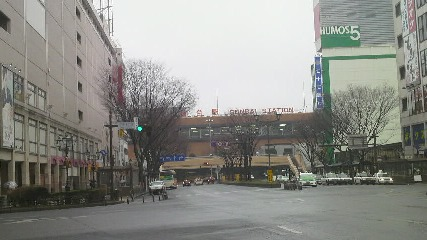
曇り＋微雨の仙台
で、岩手入りしますが遠野へ行くために新花巻から釜石線に乗り換えて遠野を目指します。
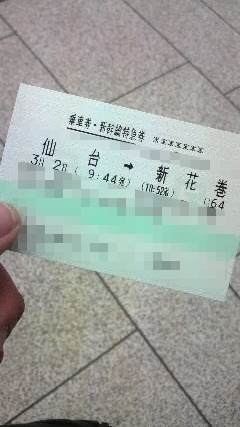
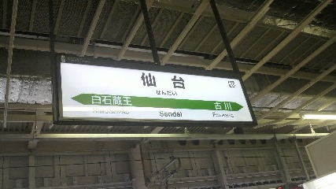
仙台駅から
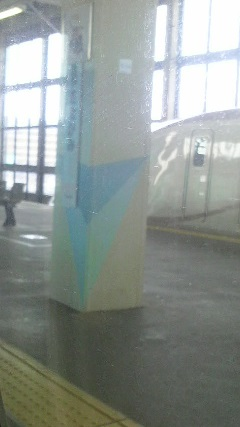
実家がある北上を通過して（見づらい）
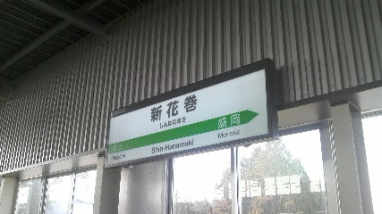
仙台から1時間ほどで新花巻へ到着、その後ローカルの釜石線に乗り換えてさらに1時間ほど
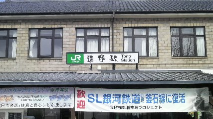
遠野へ到着
釜石線からは典型的なのどかな田舎の風景が広がってました。
一時間に一本ほどしか電車が出ていなく、乗り換え時に空白時間がなくかなりゴタゴタしてしまいました。
そのため道中ののどかな風景の写真が1枚もありません。
（駅名なんか撮ってねえで風景撮れとか言ってはいけない）
電車が少ないけど人もそこそこ、地元の老人達、一眼レフのカメラを携えた写真部的なグループ、そして目的を同じくする雰囲気の若者。
いろいろ眺めながら1時間ほど単線の線路を1車両の電車でゴトンゴトン揺られて到着。
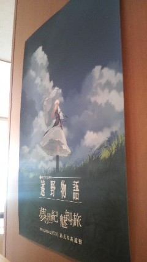
会場は遠野駅からまっすぐ徒歩数分、宿泊施設あえりあ遠野 のホールで行われました。
大きさは杜の軌跡と同じくらい、体育館程度でしょうか。
3列＋1壁とコスプレスペースな規模です。
小規模ながら有名どころのサークルさんも参加されており、
「幽閉サテライト」「AQUA STYLE」「STUDIO はまち組」
と応援しているサークルさんも多く、会場内を回るだけで楽しかったです。
また同時開催の秘封オンリーイベント「夢の世紀 魅知の旅」は秘封オンリーということでキャラ愛が伝わるサークル・作品ばかりでした。
秘封に外れ無し、とのことで目についた小説本を買いあさったりしましたがまずは紅楼夢分。
まずはサークル「透き通る風」の池田ピロウ氏作の『神様の宿』
遠野と言えば河童(kappa)が有名ですがマヨヒガの土地でもあります。
つくもの魂達が眠る幻想の宿、としてマヨヒガを管理する橙と土着の白黒猫の神。
前半はサイレント、後半でもセリフはほとんどなしで描き込みがすごい。良い作品です。
というか開始30分でほとんどのサークルの河童本(にとり)がほぼ完売してるってどういうことなんですかね。
河童捕獲許可証は通常版はまだ残ってたけど紅楼夢とのコラボ版は既に完売していました。
土地の力はすごい。
続いて「萩野屋」のたにたけし氏作の『永夜夜噺』
たにたけし氏はいつも生放送を視聴させていただいており（コミュ）、いつぞやに この永夜抄本の原稿配信をされていたので手に。
スペカの描写が細かくていい戦闘描写だと思います。後ろの設定草案が詳しすぎて参考になります。
次回は秘封本もお願いしますね（＾＾
えー・・・紅楼夢分で買った本、以上です！
いやその決しておもしろい本が見つからなかったとかではなく雰囲気楽しんでいるうちに終わっちゃった感じで
あの早苗さんコスの子 背低くてかわいいなー とか、すげーでけーおかみすちーがいたりとかを見てたわけじゃ（ｒｙ
紅楼夢分は以上ですが秘封オンリー分がまだあります。（無理に区別する必要もないんだけどね）
秘封といえば小説。と思うのは神主のＣＤブックレットについてくる秘封の物語が小説だからでしょうか。
東方ファンの中で、ゲームに出てないからといって秘封を知らない人がたまにいるそうですが歴とした神主ZUN様公認の物語です。
秘封小説を出してるサークルさんはたくさんありましたが全部買うわけにもいきませんので目についたものを。
まずはサークル「またはそのさま」の無茶氏による『黄昏ボヲダアライン』と『道標（ミチシルベ）』
『黄昏ボヲダアライン』は高校時代のメリーと文、萃香で秘封倶楽部の前身のような活動の様子を描いています。
『道標（ミチシルベ）』では"チェックポイント"に戻れる銀時計（咲夜さんのかな？）を手に入れた蓮メリの話と、蓮子がビル群の中にある喫茶店（マヨイガ）を見つけるお話。
無茶さんと少しお話しましたが『黄昏ボヲダアライン』であまりにも書きすぎてページ数が増えすぎた（だいたい1cm強）ので『道標（ミチシルベ）』では二段組みにしてページ節約を図ったそうな。
こういう特殊装丁って大変なんじゃなかったでしたっけ・・・まあ受け手側が気にする必要はないんですがこれからも頑張って欲しいです。
お次はサークル「本郷」の皮氏による『対若の蹉跌』 『夜空へ指が記すもの』 『ドラゴンソング』
『対若の蹉跌』・・・蹉跌(さてつ)-物事がうまくいかず、しくじること。挫折。失敗。(goo辞書より)
秘封の二人と四季映姫のお話。ちなみにネットでも公開してるようです。こちら
書籍だと二段組み、小さめの字、とかなり文量が多くて読み応えばっちりです。
蓮子の目が進化するのは割と斬新な設定。おもしろい。
『夜空へ指が記すもの』は短編が3話構成。そのうち題名にもなっている"夜空へ指が記すもの"は二組の秘封というパラレル設定と幻月,夢月という旧作からの悪魔が登場。
『ドラゴンソング』は蓮子メイン、紫の幻影とともに幻想郷を呼ぶ話。
同時収録の"鳥は空を飛び、魚は河を泳ぐ"はネットでも見れる模様。（上のリンクより）
こちらは姫海棠はたてと諏訪子の話。
小説もいいですがやはり漫画も、というわけでサークル「Mement Mori」の14氏による『宇佐見蓮子はフリーメイソンに恋してる』
"結社"の定義とは、それ即ち3名以上の行動である。というわけで"結社"ではなく倶楽部として違法な結界暴きをしよう。
という秘封倶楽部結成までの話を近未来のディストピアで描いています。
線が少ないながらも描き込むところはしっかりとしていて非常に雰囲気が良い作品。
それと今回のイベントとは関係ありませんが秘封ということでサークル「四七一」のかたり氏による『秘封蓮歌』を紹介しておきます。
紹介と言ってもまずはリンクから作品をどうぞ！としか言えないんですけど・・・
素晴らしいですね設定から描写からストーリーまで。
以上でイベントについては終わりです。このほかにも小物やグッズなどを購入しまして戦果は以下のようになります。
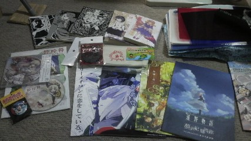
右上は気にしない
はてさてイベント終了の挨拶も聞いてお開きムードになったので退場。
あえりあ遠野 の側にある遠野博物館 へ行ってみることに。
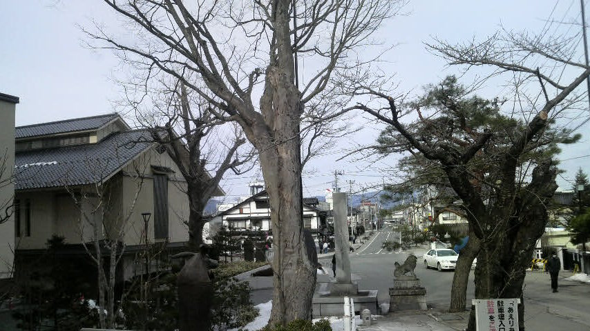
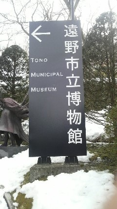
博物館の中は基本撮影禁止ですので写真は無し。
民話の里として多くの遠野物語の息遣いを感じました。
時期的にちょうど雛祭りの展示もしており、本格的な日本人形が使われていたりと趣深いものがありました。
昔からの時間の重みを感じるというか、落ち着きますね。（補修とかしてるんでしょうけど）
ちなみに柳田國男の『遠野物語』は読んだ事ありません（ぇ・・・き、機会があれば・・
博物館の側に図書館もありましたので（というか同じ建物）以前kaz君から教えてもらってた食肉処理センターの隣にある焼き肉屋という巫山戯た店へ行こうと地図を確認。
ここです。
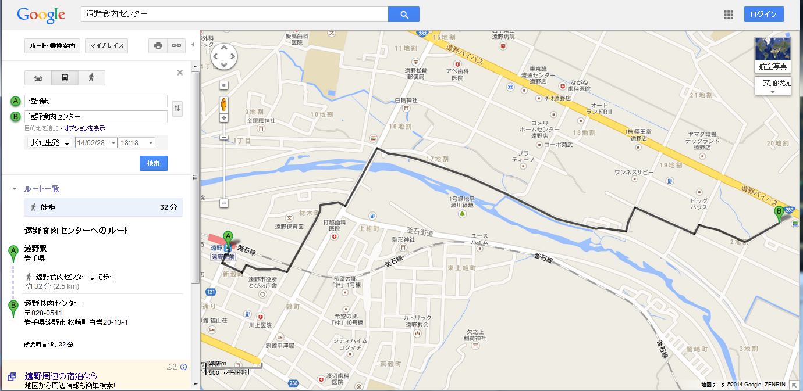
数少ない下調べをしてる時、「駅から30分か、いけるいける」と思ったのが運の尽き。
田舎の広さを舐めてはいけない。そして自分の体力のなさも考えるべきでした。
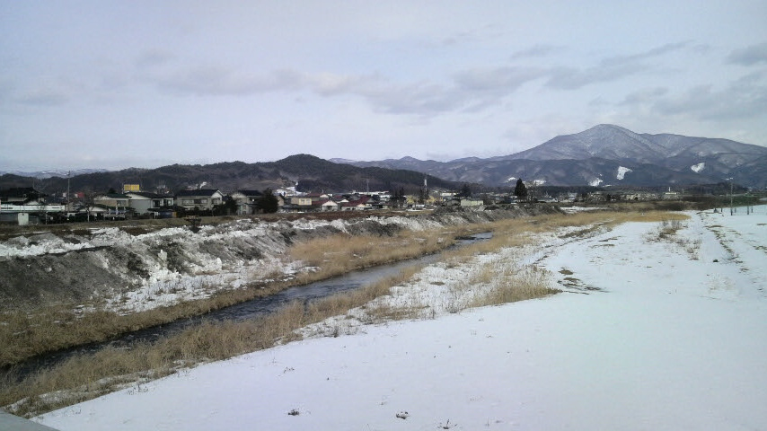
川を渡り、実際には大きな通りを通っててってこてってこ歩いて行きました。かなり疲れました。
そして歩くこと50分（遅い）、ようやく到達。
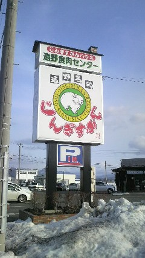
遠野はもともと名物としてジンギスカンがあるようですがここは食肉処理センター併設です。
鮮度が違いますよ。味の違いは自分には分かりませんがそれでもおいしかったです。
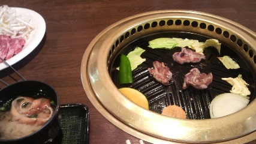
ｼﾞｭｰ
調子に乗ってレバーとウィンナーも追加注文。
ていうか何気に初一人焼き肉でした。食べながら焼くのめんどくさいですね。誰か焼いてください。自分食べますんで（＾＾
そして帰りも長い道のりをゆっくりと歩いて駅まで帰る。
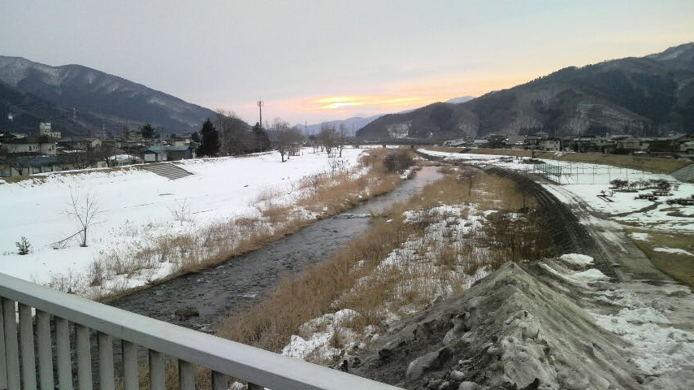
まだ雪が残る遠野の夕日
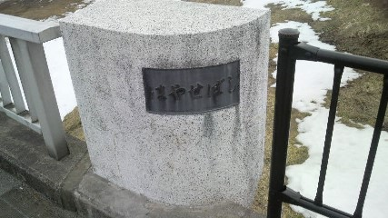
はやせばし というそうです
そして遠野駅につくも次の電車は夜。さすが田舎。
トイレ行ったり先ほど紹介した秘封の小説を読んでたりしながら時間まで待ち。
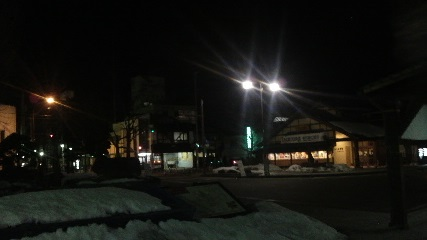
夜の遠野駅
そして窓の外の暗闇を見ながら釜石線で新花巻->新幹線で仙台へと行きと逆のルートを辿って帰宅。
街頭や灯りがなく、真の暗闇を窓に見ながら電車に揺られました。コンビニの光が恒星みたーい。
余韻に浸りつつ家に到着。お疲れ様でした。
あとがき 2014/03/09
もう一週間経ちましたか、手に入れた秘封本を読了するのに案外時間がかかってしまいましたね。
秘封の世界は幻想郷とも繋がっていますが幻想郷以上に設定がない素焼きの環境だと思います。
設定がないということは作者さんがそれぞれ任意の設定を付け加えられる余地があるということでありその設定は十人十色です。
人の数だけ幻想郷、素晴らしいです。
ただ設定が複雑すぎて理解しにくいものは作者さんの力量もありますが読み手側の読解力、この場合自分の読み取りが不十分だと感じることがちらほらありました。
できるだけ多くのものを共有して、共鳴し、共振し、共感するスタイルことを目指していきたいものです。
今度はちゃんと下調べしてから遠野の民話の幻想を追い求めて旅をしたいです。
次は社の軌跡かな？
2014/03/09 written by shift
旅行記 メニューへ戻る